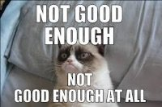

The mind finds things to be dissatisfied about.
It wants to solve, ruminate, figure out. It wants to fix, dwell and wallow.
Because it’s thought. Thought needs something to think about.
Otherwise it might be seen to be nothing.
Which is unacceptable. To mind.
That’s why what thought stews about- the particular subject matter, the topic, the content …
is irrelevant.
It all does the job.
Aloneness and lack of love, failure, money, relationships, performance, body, approval, addiction, politics or just plain wrongness…
It simply doesn’t matter.
Mind wants a problem. Any will do.
That includes the so-called search for enlightenment.
As fodder for the circling mind, the pain of not getting enlightened, or getting it and losing it, or not understanding it, or understanding it but not experiencing it, or wanting more of it…
all or any of that…
is as good a thing to dwell on as anything else.
Folks think their inadequacy and their suffering and their sense of failure is worse or superior or different or special because it centers around consciousness and awakening and awareness, but actually,
They are just caught in the same mind-circling as everyone else.
Craving a different state or a longer-lasting experience is exactly the same as craving more success or better health or less addiction.
Thinking about enlightenment is still thinking.
Same.
Meanwhile people don’t notice perfectly good lives, ignoring perfectly full, perfectly adequate, perfectly enough presents,
While pining for an imagined better state that will make everything perfect,
Later.
Some might even land on suicide as a solution.
Not noticing that even that is just mind coming up with things to think about.
Because finding solutions for pain also gives mind plenty to work with.
This can be hard to watch sometimes, as folks don’t see what’s already here and instead focus on what’s supposedly lacking,
And that’s how it goes- it is how the game works here.
These selves, focused on inadequacy even in the face of great abundance, will continue to feel like not enough.
Because as it happens, thought is right.
We- these selves, these personalities- are not enough. We are incomplete.
We are indeed flawed, imperfect, reactive, wrong and not authentically what we really are. We do follow thoughts and don’t think straight.
Yes.
So what.
So what.
So what.
Perhaps it’s enough. Anyway.
Perhaps even the thoughts and feelings of wanting more or something else,
Can be enough.
Perhaps what is not lacking can be enough.
Perhaps what is here can be enough.
And if not,
Perhaps lack, and not-enoughness, and non-awakening, and not-rightness, and hard feelings…
Also can be enough.
Perhaps mind can notice, even for a moment, that it's just stewing again. Just in order to be able to stew.
Which is why, for today, and other days,
I wish for you
A big, fat,
Life-enhancing,
Fill-'er-up,
Full of grace,
Dose of
So what.
Click here to get your every week.
"If you’re seeking something beyond all the time, you never get with it. You’re never here.”
--Alan Watts
